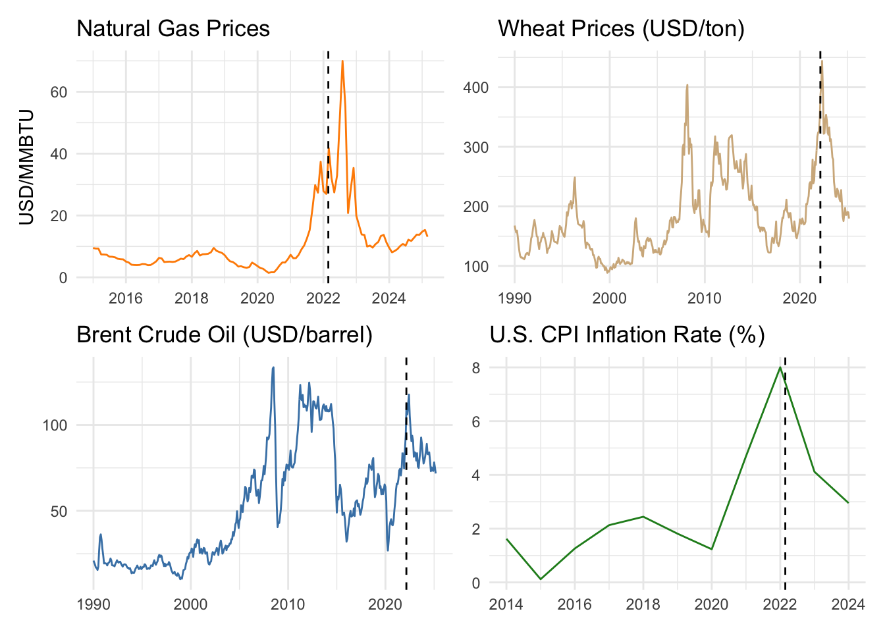

library(tidyverse)── Attaching core tidyverse packages ──────────────────────── tidyverse 2.0.0 ──
✔ dplyr 1.1.4 ✔ readr 2.1.5
✔ forcats 1.0.0 ✔ stringr 1.5.1
✔ ggplot2 3.5.2 ✔ tibble 3.2.1
✔ lubridate 1.9.4 ✔ tidyr 1.3.1
✔ purrr 1.0.2
── Conflicts ────────────────────────────────────────── tidyverse_conflicts() ──
✖ dplyr::filter() masks stats::filter()
✖ dplyr::lag() masks stats::lag()
ℹ Use the conflicted package (<http://conflicted.r-lib.org/>) to force all conflicts to become errorslibrary(readr)
library(scales)
Attaching package: 'scales'
The following object is masked from 'package:purrr':
discard
The following object is masked from 'package:readr':
col_factorlibrary(reactable)
library(patchwork)
library(lubridate)
library(zoo)
Attaching package: 'zoo'
The following objects are masked from 'package:base':
as.Date, as.Date.numericnatgas <- read_csv("PNGASEUUSDM.csv") %>%
rename(date = observation_date, price = PNGASEUUSDM) %>%
mutate(date = as.Date(date)) %>%
filter(year(date) >= 2015 & year(date) <= 2025)Rows: 423 Columns: 2
── Column specification ────────────────────────────────────────────────────────
Delimiter: ","
dbl (1): PNGASEUUSDM
date (1): observation_date
ℹ Use `spec()` to retrieve the full column specification for this data.
ℹ Specify the column types or set `show_col_types = FALSE` to quiet this message.p1 <- ggplot(natgas, aes(x = date, y = price)) +
geom_line(color = "darkorange") +
geom_vline(xintercept = as.Date("2022-02-24"), linetype = "dashed") +
labs(title = "Natural Gas Prices", y = "USD/MMBTU", x = NULL) +
theme_minimal()
wheat <- read_csv("PWHEAMTUSDM.csv") %>%
mutate(date = as.Date(observation_date))Rows: 423 Columns: 2
── Column specification ────────────────────────────────────────────────────────
Delimiter: ","
dbl (1): PWHEAMTUSDM
date (1): observation_date
ℹ Use `spec()` to retrieve the full column specification for this data.
ℹ Specify the column types or set `show_col_types = FALSE` to quiet this message.p2 <- ggplot(wheat, aes(x = date, y = PWHEAMTUSDM)) +
geom_line(color = "tan") +
geom_vline(xintercept = as.Date("2022-02-24"), linetype = "dashed") +
labs(title = "Wheat Prices (USD/ton)", y = NULL, x = NULL) +
theme_minimal()
oil <- read_csv("POILBREUSDM.csv") %>%
mutate(date = as.Date(observation_date))Rows: 423 Columns: 2
── Column specification ────────────────────────────────────────────────────────
Delimiter: ","
dbl (1): POILBREUSDM
date (1): observation_date
ℹ Use `spec()` to retrieve the full column specification for this data.
ℹ Specify the column types or set `show_col_types = FALSE` to quiet this message.p3 <- ggplot(oil, aes(x = date, y = POILBREUSDM)) +
geom_line(color = "steelblue") +
geom_vline(xintercept = as.Date("2022-02-24"), linetype = "dashed") +
labs(title = "Brent Crude Oil (USD/barrel)", y = NULL, x = NULL) +
theme_minimal()
cpi <- read_csv("FPCPITOTLZGUSA.csv") %>%
mutate(date = as.Date(as.yearmon(as.character(observation_date), "%Y-%m")))Rows: 11 Columns: 2
── Column specification ────────────────────────────────────────────────────────
Delimiter: ","
dbl (1): FPCPITOTLZGUSA
date (1): observation_date
ℹ Use `spec()` to retrieve the full column specification for this data.
ℹ Specify the column types or set `show_col_types = FALSE` to quiet this message.p4 <- ggplot(cpi, aes(x = date, y = FPCPITOTLZGUSA)) +
geom_line(color = "forestgreen") +
geom_vline(xintercept = as.Date("2022-02-24"), linetype = "dashed") +
labs(title = "U.S. CPI Inflation Rate (%)", y = NULL, x = NULL) +
theme_minimal()
(p1 | p2) / (p3 | p4)